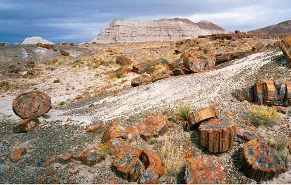
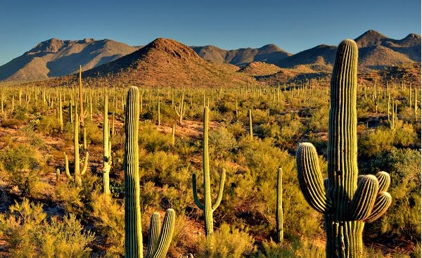
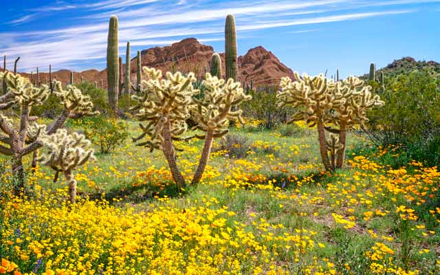

The Grand Canyon National Park
Located in Northwestern Arizona

Petrified Forest National Park
Located in Northcentral Arizona
Saguaro National Park
Located in Southeast Arizona
Organ Pipe Cactus National Park
Located in the city of Ajo
